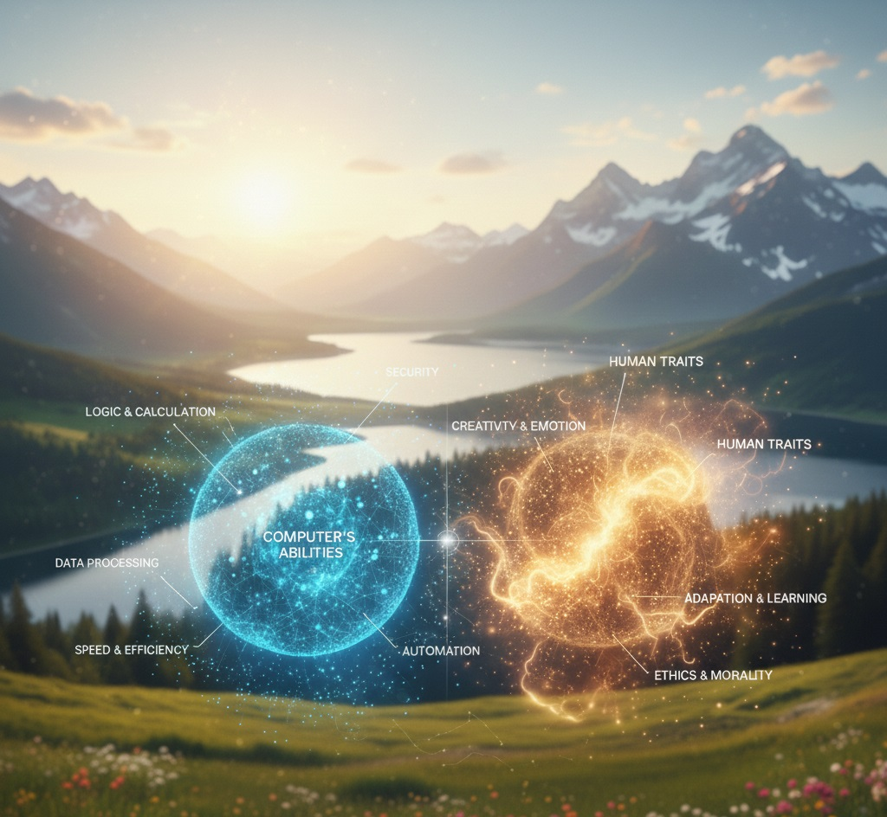

Images
Videos
Nuclear Power Safety - The Main Steam Line Break Accident
Additional Video Content
Highfrequency Filter Design
Audio

The AI Safety Index
Ref. Max Tegmark
A collection of images, videos, and recordings from my work and personal projects.
Nuclear Power Safety - The Main Steam Line Break Accident
Highfrequency Filter Design

Ref. Max Tegmark